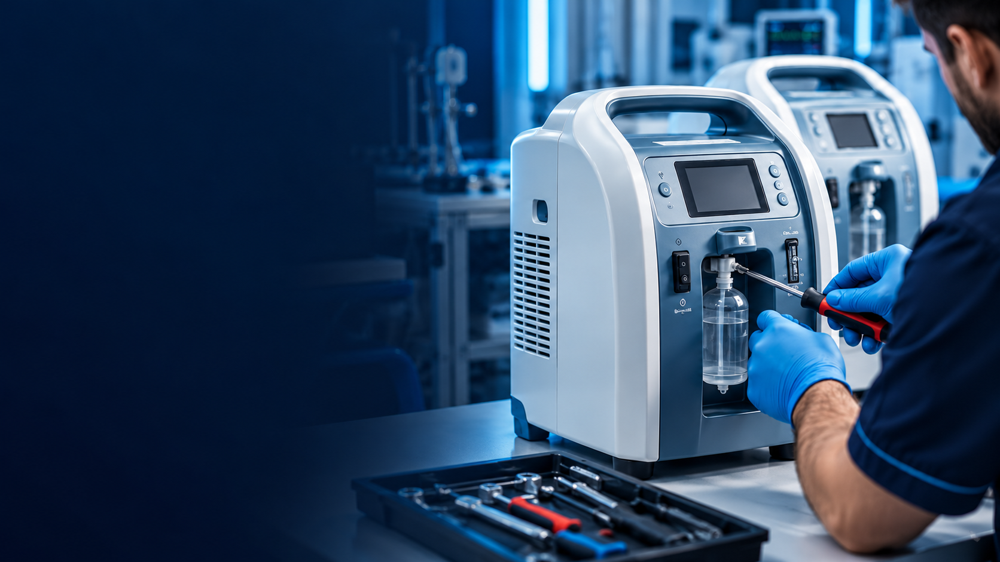
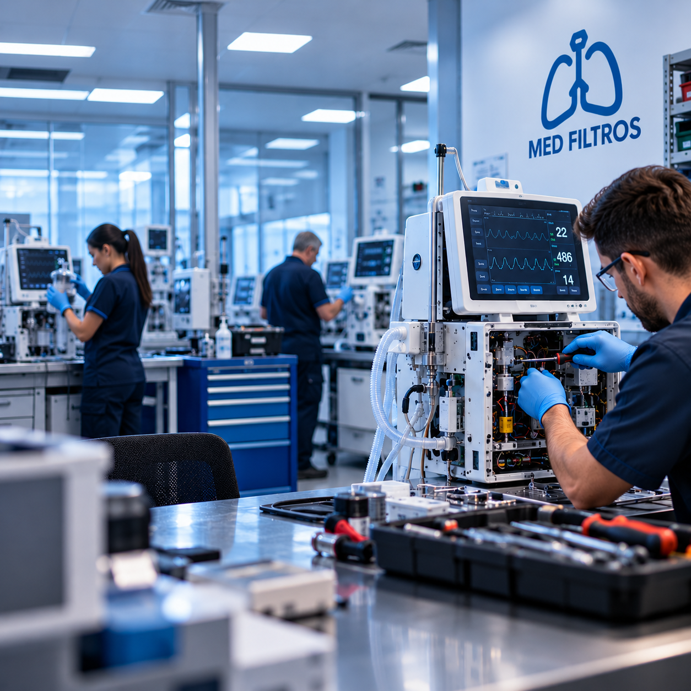

Fornecimento e Troca de Filtros
Filtros bacteriológicos, HEPA, coalescentes e de partículas para compressores, redes de gases e equipamentos respiratórios.
Solicitar orçamento →
Ar limpo, equipamentos seguros
e conformidade com as normas
para hospitais e clínicas.
Filtragem eficiente contra
contaminantes e partículas
Serviços seguindo as normas
técnicas e sanitárias vigentes
Cronograma de trocas e
relatórios técnicos
Fornecimento de filtros e manutenção especializada para equipamentos médico-hospitalares, com segurança e conformidade técnica.
Filtros bacteriológicos, HEPA, coalescentes e de partículas para compressores, redes de gases e equipamentos respiratórios.
Solicitar orçamento →Inspeção, limpeza, ajustes e reparos em compressores de ar medicinal, bombas de vácuo e concentradores de oxigênio.
Falar com especialista →Verificação de desempenho dos filtros e emissão de relatórios técnicos para auditorias e vigilância sanitária.
Saiba mais →
MED FILTROSA Med Filtros é especializada no fornecimento de filtros e na manutenção de equipamentos médico-hospitalares, atendendo hospitais, clínicas e laboratórios.
Trabalhamos para garantir que o ar e os gases que chegam ao paciente estejam livres de contaminantes, com equipamentos funcionando no máximo da eficiência.
Nosso compromisso é oferecer um atendimento ágil, peças de qualidade e soluções que tragam segurança para profissionais de saúde e pacientes.
Med Filtros — cuidado que começa no ar que se respira.
Conheça os principais tipos de serviços e ambientes atendidos pela Med Filtros.
Instituições que confiam no trabalho da Med Filtros.
Avaliações de clientes e parceiros que confiam na Med Filtros.
A equipe foi atenciosa desde o primeiro contato. Recebemos orientações sobre os filtros necessários e um atendimento organizado, o que facilitou bastante nosso planejamento de manutenção.
Precisávamos de suporte para nossos equipamentos e tivemos uma comunicação clara durante o atendimento. A equipe explicou os procedimentos e esclareceu nossas dúvidas de maneira objetiva.
Gostamos da atenção aos detalhes e da organização no acompanhamento dos serviços. Ter informações claras sobre os procedimentos realizados ajuda muito na rotina da nossa instituição.
Tire suas principais dúvidas sobre nossos filtros e serviços de manutenção.
Depende do tipo de filtro, do equipamento e da intensidade de uso. Após a avaliação técnica, montamos um cronograma de trocas de acordo com o fabricante e as normas aplicáveis.
Compressores de ar medicinal, bombas de vácuo clínico, concentradores de oxigênio, redes de gases medicinais e sistemas de filtragem de ambientes.
Sim. Cada atendimento gera um relatório técnico com os serviços realizados e os filtros substituídos, útil para auditorias e fiscalizações.
Sim. Entre em contato pelo WhatsApp e nossa equipe verifica a disponibilidade para atendimento o quanto antes.
É só falar com a gente pelo WhatsApp ou e-mail na seção de Contato. Avaliamos a necessidade da sua instituição e retornamos com uma proposta detalhada.
Entre em contato com a Med Filtros e solicite um orçamento.